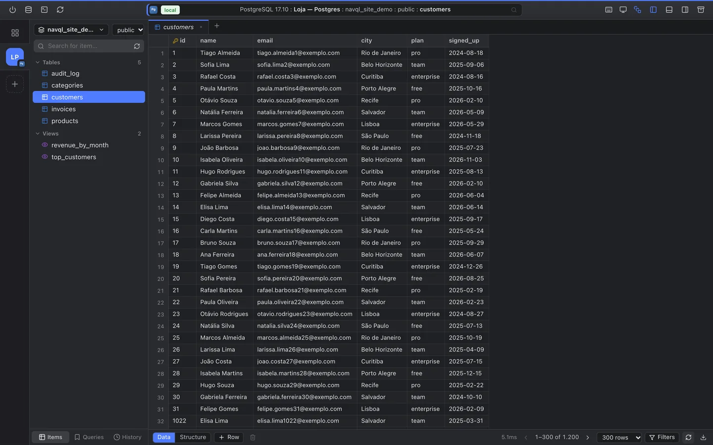
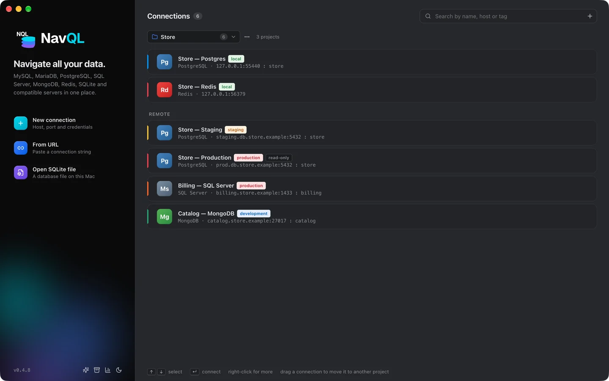
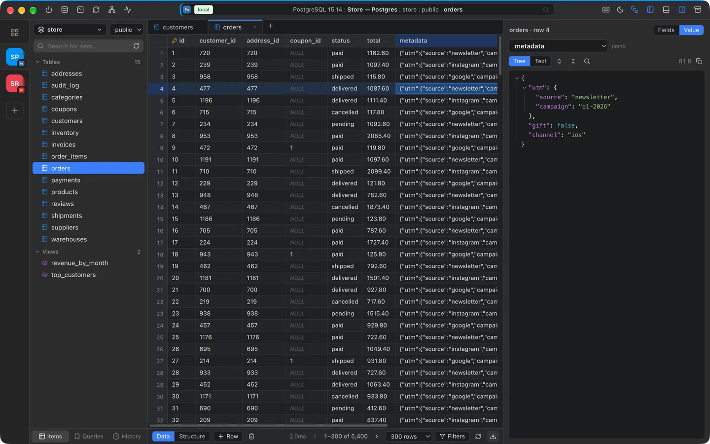
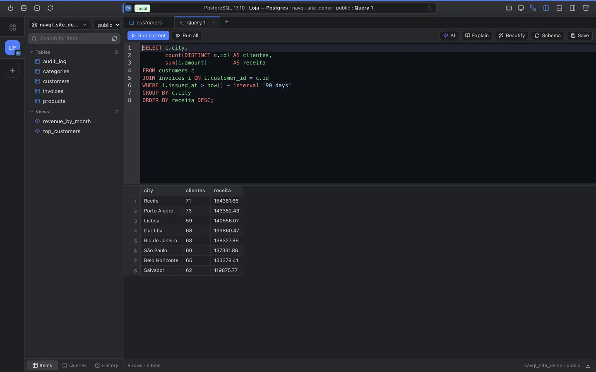
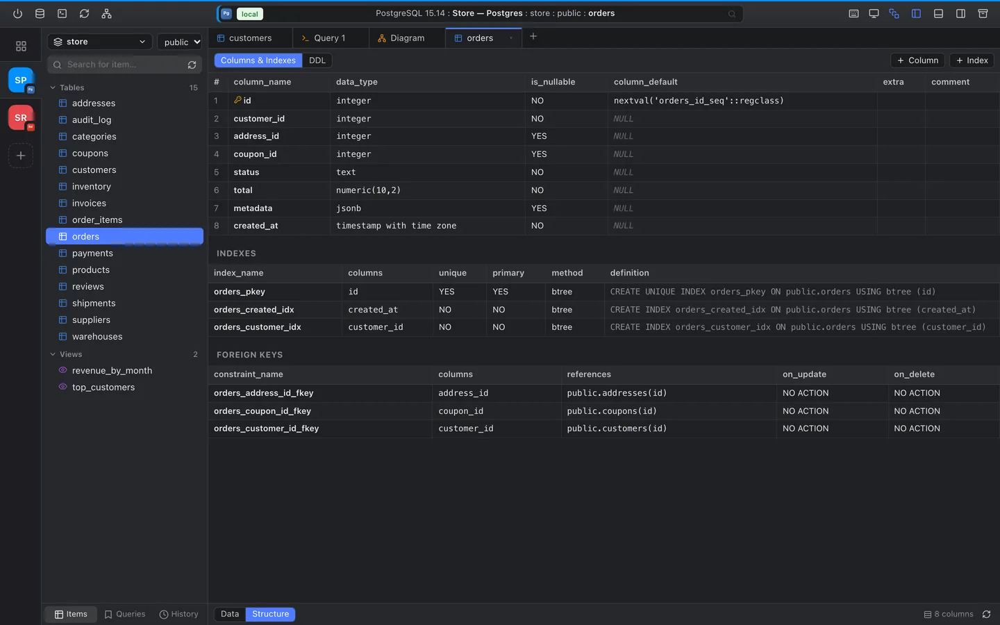
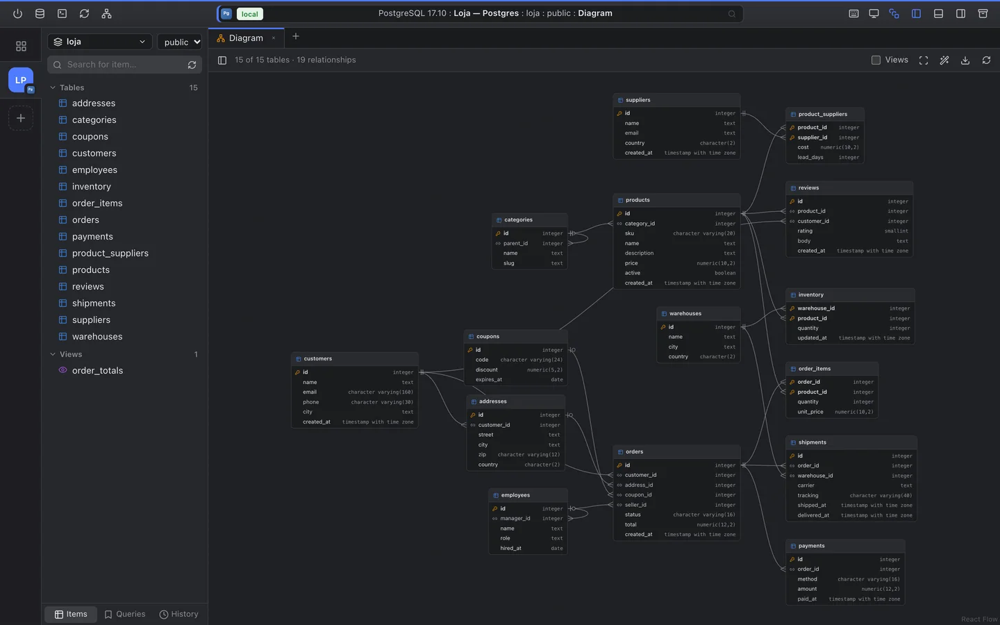
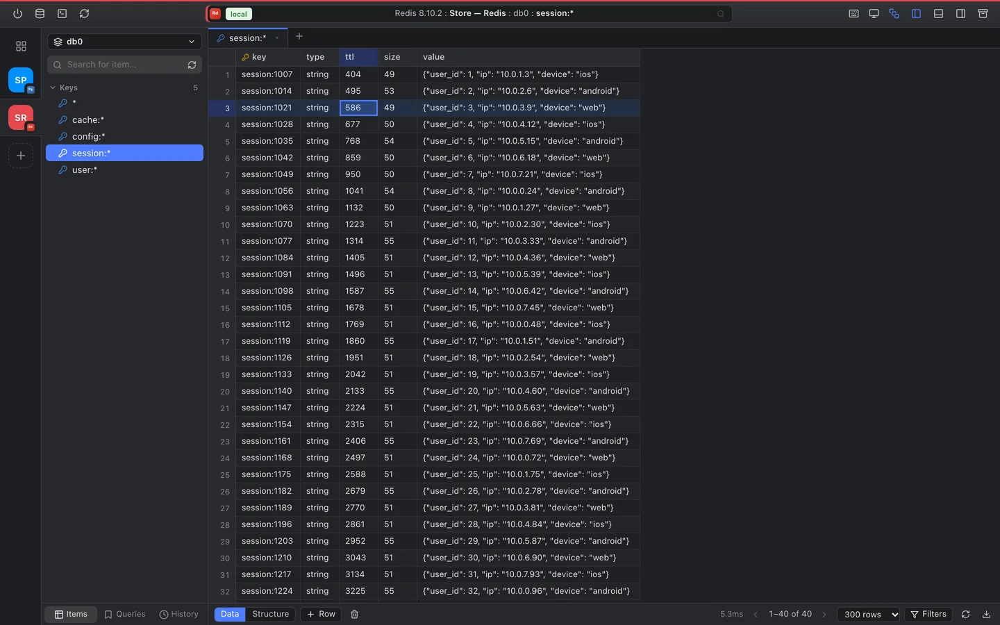
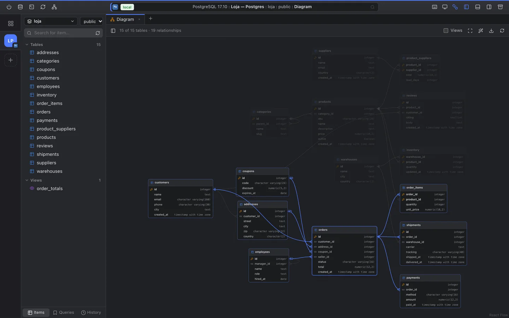

Precise
Clean shapes and noise-free information, like a good query. You see the data, not the tool.
MySQL, PostgreSQL, SQL Server, MongoDB, Redis and more in one clean, focused place. Browse tables and collections, edit records and run queries, fast.

Connect the databases you already use
Different databases, stacked together like the layers of the icon. No more switching tools for every project.
Clean shapes and noise-free information, like a good query. You see the data, not the tool.
A virtualized grid that opens thousands of rows instantly, keyboard shortcuts for everything and queries in milliseconds.
SQL, documents and key-value side by side: tables, views, functions, collections and Redis keys in the same interface.
From your connection list to a finished query, just a few clicks away.

Each connection gets its own color and tag, so you never mistake production for development.

Open a table and scroll through thousands of rows without a stutter. Edit cells, add rows and apply filters.

Write, format and run queries with autocomplete that knows your schema.

Columns, types, indexes and foreign keys for every table, plus the full DDL.

One click draws every table and how they connect, laid out automatically.

Keys are grouped by prefix and open in the same grid as your tables, next to your SQL connections.
Reach databases on private networks without opening ports. Secrets are stored with AES-256 encryption.
Read-only connections and a confirmation step before commands that change production data.
Describe what you need and get ready-to-run SQL, using your database schema as context.
One-click dumps of PostgreSQL, MySQL, MariaDB and MongoDB, with progress tracking and download.
Open any table with ⌘P, start a query with ⌥T and run it with ⌘↵.
Export results to CSV, JSON or SQL and share them without copy-pasting.
Group connections into projects and keep several open side by side, each with its own tabs. Switch with ⌃1–⌃9.
Keys grouped by prefix with type, TTL and size, edits in a single MULTI, and a redis-cli style command editor.
NavQL checks for new versions on its own, downloads them in the background and installs on restart.
From a quick SELECT to a report full of JOINs, results show up right below, ready to filter, edit or export.

Click a table and NavQL lights up everything it touches, so a new schema makes sense in seconds.
Free for macOS and Windows. Connect your first database in under a minute.
Version 0.4.6 · All releases. On macOS, if the first launch is blocked, open System Settings → Privacy & Security and click Open Anyway.